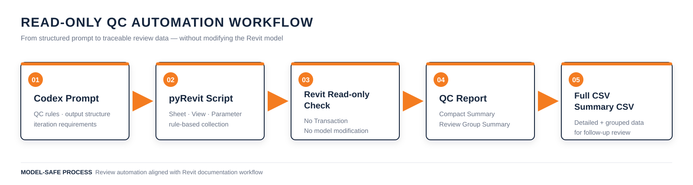
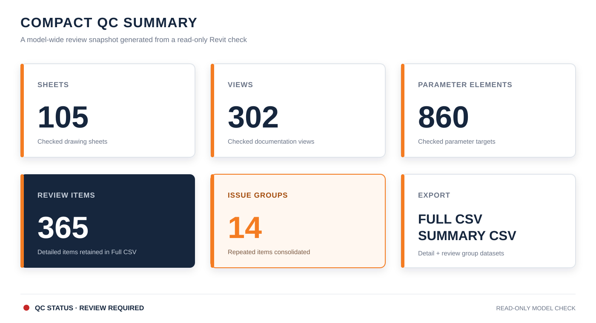

BIM / DX · QUALITY CONTROL WORKFLOW
REVIT QC REPORT AUTOMATION
Codex-assisted pyRevit Workflow
WORKFLOW DIAGRAM
01
검토 기준을 구조화하고 pyRevit 스크립트로 연결하여 모델을 수정하지 않은 상태에서 Sheet, View, Parameter 정보를 수집했습니다. 반복 검토 항목은 Review Group으로 정리하고 상세값은 CSV에 유지했습니다.
QC SUMMARY
02
REVIEW GROUP SUMMARY
03| Category | Item Type | QC Item | Severity | Mode |
|---|---|---|---|---|
| Parameter QC | Rooms | RoomType | High | Group |
| View QC | Floor Plan | Sheet Placement | Medium | Group |
| Sheet QC | A-Series | Placed Views | Medium | Review |
| View QC | Section | View Template | Medium | Group |
STRUCTURE EXAMPLE
화면은 대표 그룹과 Sample만 간결하게 표시하고, Full CSV에는 요소별 전체 검토 데이터를 보존합니다.
화면은 대표 그룹과 Sample만 간결하게 표시하고, Full CSV에는 요소별 전체 검토 데이터를 보존합니다.